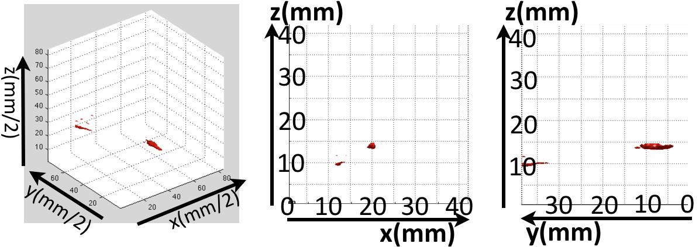

術中PETによる手術支援システムに関する研究
背景・システム概要
近年内視鏡手術の施術例が増えているが、内視鏡で深部の腫瘍診断は行えない。これに対し3D画像診断を用いたナビゲーションも実用化されているが、こちらも術時に腫瘍診断は行えない。
そこで、本研究では内視鏡機器にPET用検出器と3次元位置センサを搭載することで、手術と深部診断を同時に行うシステムを提唱する。3D画像診断の中でPETを利用する理由は、PETが腫瘍の有無を判断するに際し有用な生体機能イメージングを提供することに因る。また、小型の検出器を対象に近づけることでPET画像の解像度向上も期待される。[1-3]
具体的には図1に簡略化されるシステムを提案する。従来のPETと撮像原理は同じだが、撮像対象を挟む検出器のうち一方を内視鏡機器に搭載するという点で異なる。内視鏡の位置計測には光学式のトラッキングシステムを用いる。
実験
提唱システムの実験試作機として、卓上に固定した検出器と、手動で動かすプローブ型検出器を作製した。患者の体外の検出器と、内視鏡搭載用の小型検出器を模したものである。プローブ型検出器には3mm角のGAGG結晶を用い、固定検出器には2×2×10mmのLuAG結晶にAPDを付属した144チャンネル(27mm四方)のものを作製した。また、赤外線反射球を取り付けた位置センサをプローブ型に固定し、γ線計測中のプローブ検出器の位置を光学式のトラッキングシステムを用いて記録した。
22Na線源を２種類の検出器の間に置き、プローブを手動で自由に動かしながらその位置計測を行い4分間の計測を行った。(図2)
測定後に同時検出イベントの検出タイミングとその時のプローブの位置情報を統合処理し画像を再構成した。再構成アルゴリズムは単純な投影法を用いた。撮像画像を図３に示す。
|  |
図３：結果画像. 左が鳥瞰図、中央が正面図、右が側面図。
本システムの試作機を用い、点線源を捉えることができている。 |
結果と考察
実験画像の分解能は深さ方向には21.6mmと評価されたが、縦横方向には臨床用のPETとほぼ等しいか、より優れた3.5~4.1mmと評価された。プローブが小さい分γ線の検出効率は低下すると考えられるが、撮像対象に近づくことにより検出効率の増加も見込める。撮像対象を定めないまま本提唱システムの感度について理論的に考察を行うことは難しい。よって、今後は撮像対象を胃癌と胃周囲のリンパ節に絞り、その腹腔鏡手術に最適なプローブを改めてデザインし評価を行おうと考えている。
関連論文
| 1 |
Iriya T, Shimazoe K, Liao H, et al (2013) Design and Evaluation of
PET-Endoscope System. The 9th Asian Conference of Computer
Aided Surgery 52-53p |
参考文献
| 1 |
H. Wu et al, ”A Feasibility Study of a Prototype PET Insert Device to
Convert a General-Purpose Animal PET Scanner to Higher Resolution,” J.
Nucl. Medicine, vol. 49(1), pp. 79-87, 2008 |
| 2 |
T. Yamaha et al, ”A SiPM-based isotropic-3D PET detector X ’tai cube
with a three- dimensional array of 1mm3 crystals,” Physics in Medicine
and Biology vol. 56, pp. 6793-6807, 2011 |
| 3 |
Y. C. Tai et al, ”Virtual-pinhole PET,” J. Nucl. Medicine. vol. 49(3), pp. 471-479, Mar. 2008 |
|